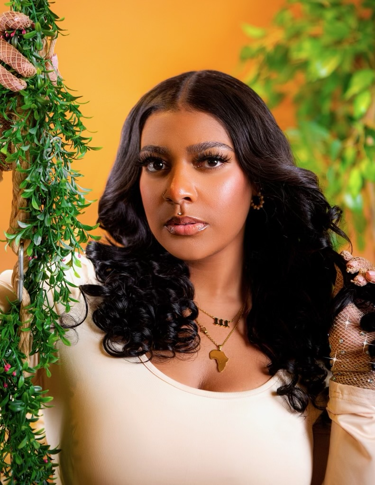

Sew In
A sew-in is a type of protective hairstyle where hair extensions are sewn into cornrowed natural hair using a needle and thread. This method is popular for adding length, volume, or a new texture without damaging the natural hair. Sew-ins offer a versatile, long-lasting, and low-maintenance option for changing hairstyles while protecting the natural hair underneath.
Here are some key features of a sew in:
-
Versatility: Here are some variations of Sew-Ins that I offer
- Middle part Leave Out: About 2" of hair is left out in the middle of hair to blend with extensions.
- Side Part Leave Out: About 2" of hair is left out in either side of hair to blend with extensions.
- 360 leave out: About 2" of hair is left out around the perimeter of the hair to blend with extensions. This is perfect if you like to wear your hair up in a ponytail, or in a flip over style.
- Veratile Sew In: Any combination of the variations listed above. This alllows for increased styling options.
- Half-up-half-down: The hair is split into two sections. The bottom part of the hair is a traditinal sew in, while the top part of the hair is placed into one or two ponytails.
- Protective Hairstyle: Sew-ins are considered a protective style because the natural hair is braided and tucked away, protecting it from daily manipulation, heat styling, and environmental factors. This helps promote hair growth and prevents breakage.
- Long Lasting: Sew-ins typically last for 6 to 8 weeks with proper care, though some people may keep them in for up to 12 weeks. Regular maintenance, like washing the scalp and moisturizing, is necessary to ensure the health of the hair and scalp underneath the extensions.
- Low Maintenance: While the style is long-lasting, sew-ins require minimal daily upkeep. However, it's crucial to care for the natural hair underneath by keeping the scalp clean and moisturized. Some people opt for regular salon visits to maintain their sew-ins.
- Customizable: Sew-ins can be customized based on individual preferences, including length, volume, and texture. Extensions can also be dyed to match or enhance the natural hair color.
In summary, a sew-in is a versatile and protective hairstyle that allows people to add length, volume, and texture to their hair while keeping their natural hair protected and healthy. It’s a great option for anyone looking for a temporary style change that lasts several weeks.